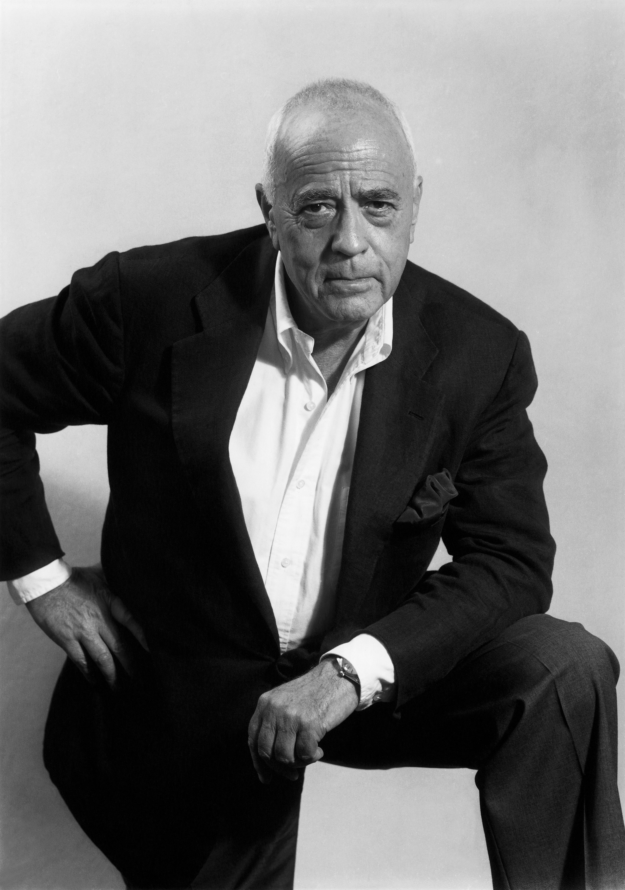

In depth:
Max Miedinger
1926-30: trains as a typesetter in Zurich, after which he attends evening classes at the Kunstgewerbeschule
in Zurich.
1936-46: typographer for Globus department store’s advertising studio in Zurich. 1947-56: customer
counselor and typeface sales representative for the Haas’sche Schriftgießerei in Münchenstein near Basle.
From 1956 onwards: freelance graphic artist in Zurich.
1956: Eduard Hoffmann, the director of the Haas’sche Schriftgießerei, commissions Miedinger to develop
a new sans-serif typeface.
1957: the Haas-Grotesk face is introduced.
1958: introduction of the roman (or normal) version of Haas-Grotesk.
1959: introduction of a bold Haas-Grotesk.
1960: the typeface changes its name from Neue Haas Grotesk to Helvetica™.
1983: Linotype publishes its Neue Helvetica®, based on the earlier Helvetica™.
2001: Linotype publishes Helvetica World an update to the classic Helvetica.
Max Miedinger (24 December 1910 in Zurich, Switzerland – 8 March 1980, Zürich, Switzerland) was a Swiss typeface designer.
He was famous for creating the Neue Haas Grotesk typeface in 1957 that was renamed Helvetica in 1960.
Marketed as a symbol of cutting-edge Swiss technology, Helvetica achieved immediate global success. Between
1926 and 1930 Miedinger trained as a typesetter in Zürich, after which he attended evening classes at
the Kunstgewerbeschule Zürich. At age sixteen Max became an apprentice typesetter for Jacques Bollmann
at a book printing office in Zürich. After four years as an apprentice, Miedinger enrolled in the School
of Arts and Crafts.
